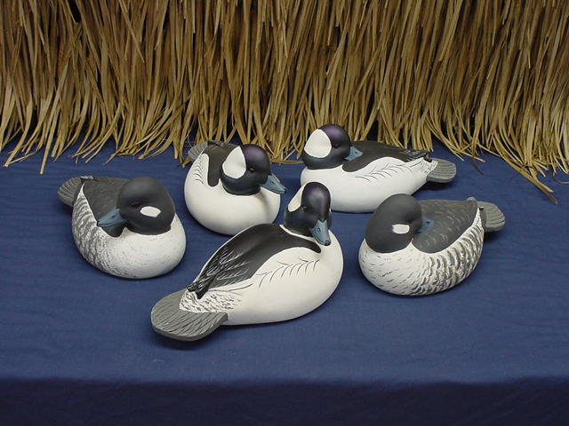

Tuesday, December the 6th, 2011
back to: title, date or indexes
Dear Frank, writes Tim Thurn, I find it somewhat befuddling that we are almost a week in to your excellent Hooting Yard advent calendar initiative and have not yet been given a picture of a bird to print and cut out and paste with glue to our sheet of cardboard. Given that you are one of the world's foremost ornithologists, sort of, things have come to a pretty pass, and I know a pretty pass when I see one. (My forthcoming book Pretty Passes I Have Known is the proof of that.) So please get your finger out and give us a picture of a bird to print and cut out and paste with glue to our sheet of cardboard! Yours until the cows come home, Tim Thurn.
I pay due attention to my readers, so for today I have chosen not just a picture of a bird, but a picture of several birds, or rather several painted wooden birds, in the form of these excellent bufflehead decoys from M.A.D. Decoys of Birdsboro, PA.

Hooting Yard on the Air, January the 20th, 2011 : “Goblin Colour Codes” (starts around 14:39)